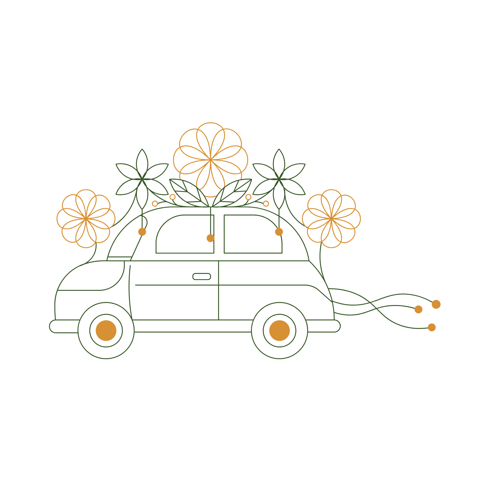
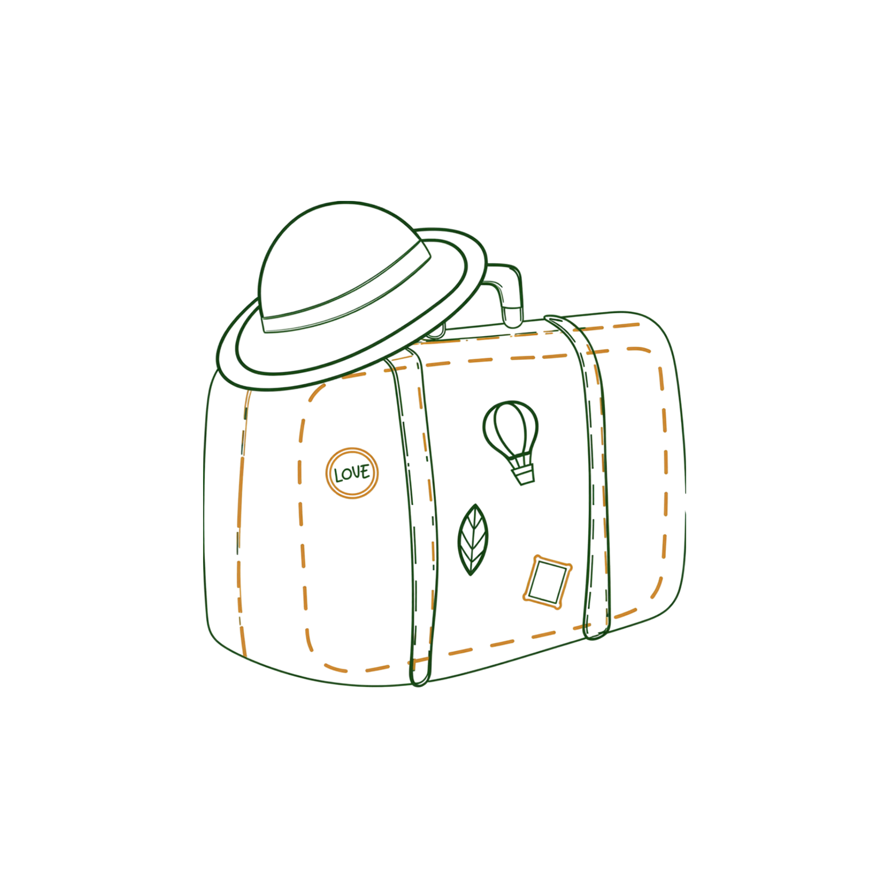
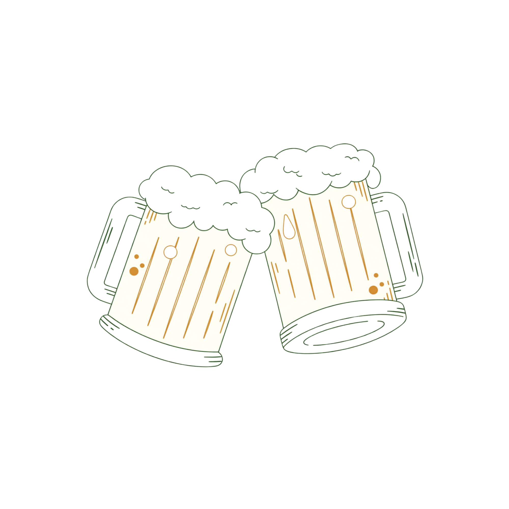
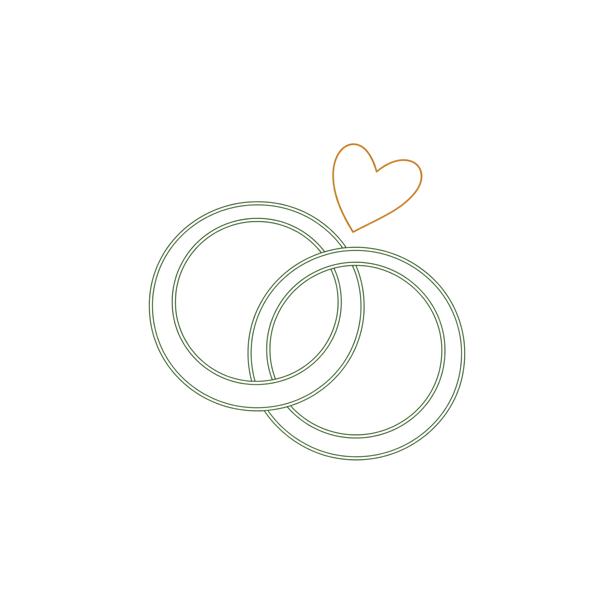
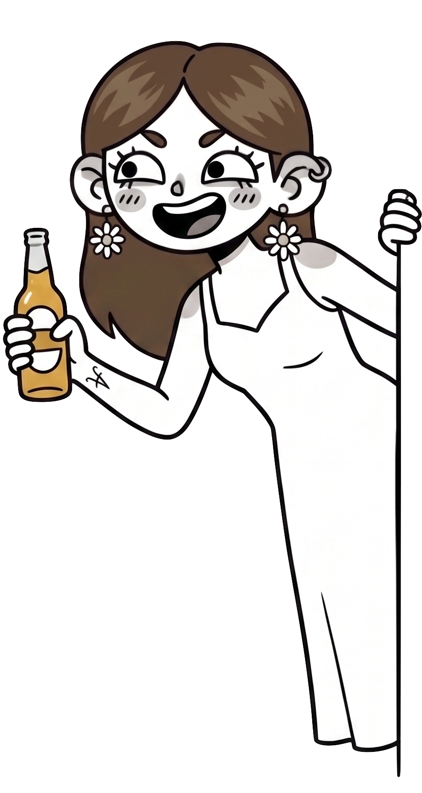
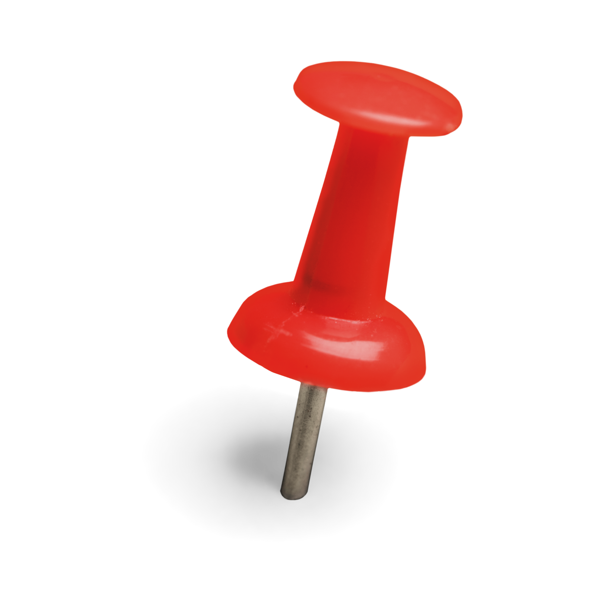

La casa de colònies Can Sans està situada al veïnat de Fellines, als afores de Viladasens. Situada a uns 20 quilòmetres de Girona, Banyoles i Figueres.
Cami de Fellines s/n
Viladasens (Girona)






Elegant, però còmode. Tot es farà a l'exterior i estarem envoltats de natura.
Allà hi ha parking privat on caben tots els cotxes. Cadascú s'organitza l'anada i la tornada com i amb qui vulgui.
Pijama, necesser, muda per a l'endemà.
No t'has de preocupar ni pels llençols ni per l'esmorzar.
Porteu també banyador, tovallola i xancletes per diumenge.
Omple el següent formulari per ajudar-nos a organitzar millor el gran dia!
"Celebrem la vida envoltats dels qui estimem"